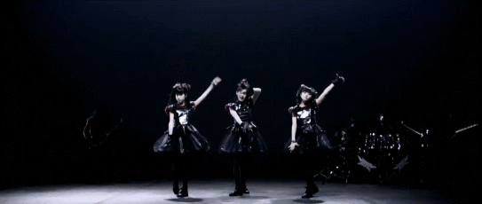

¿ paso otra vez.... lo suponia?
hubo un tiempo donde fuiste este faro para mi
si quiero we al chile
no quiero we al chile

este faro representa paz, seguridad, peligro y tambien es el conecta a otra realidad
eras mi paz y seguridad en mi tormenta y peligro por acustumbrarme a ella
otra realidad porque me sacabas de ese momento donde estaba mal y me llevabas a un lugar donde me divertia
/